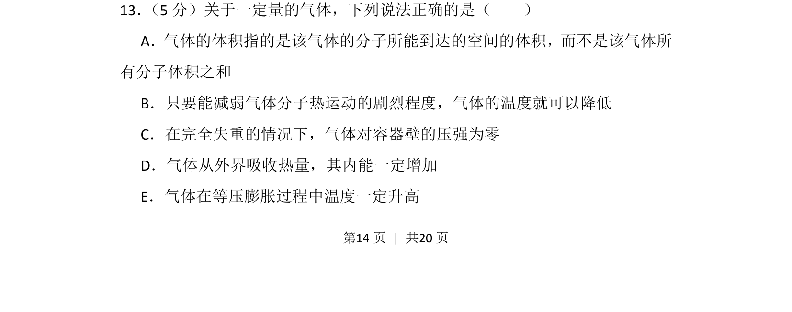
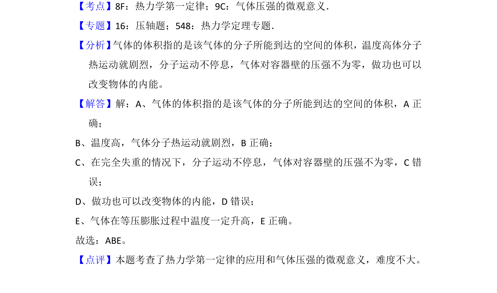

2013-新课标Ⅱ-13
考点：气体体积微观含义 温度与分子平均动能 气体压强微观解释 热力学第一定律 盖吕萨克定律
题面


摘要
该题考查气体体积的微观含义、温度与分子热运动、气体压强产生条件、热力学第一定律及等压膨胀中的温度变化。
关联考点
答案与解析

📄 原 PDF 第 14 页：
素材/真题/吉林/2008-2024·（吉林）物理高考真题/2013年高考物理试卷（新课标Ⅱ）（解析卷）.pdf
题干文本
13． （5分）关于一定量的气体，下列说法正确的是（ ） A．气体的体积指的是该气体的分子所能到达的空间的体积，而不是该气体所 有分子体积之和 B．只要能减弱气体分子热运动的剧烈程度，气体的温度就可以降低 C．在完全失重的情况下，气体对容器壁的压强为零 D．气体从外界吸收热量，其内能一定增加 E．气体在等压膨胀过程中温度一定升高